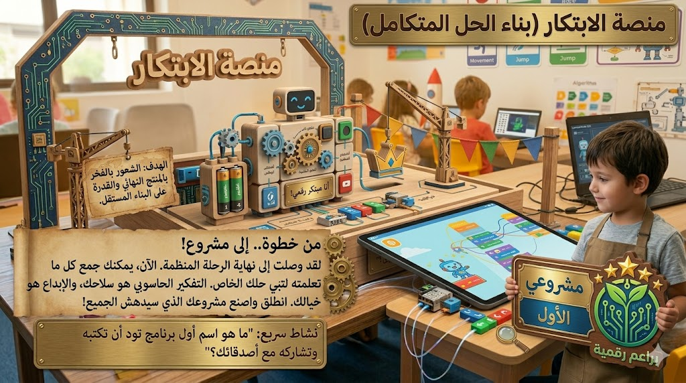

لبنات الأحداث
هذه اللبنات تبدأ البرنامج عندما يقع حدث معين، مثل الضغط على زر البدء أو النقر على الشخصية. وهي أول لبنة غالبًا في أي مشروع تفاعلي.
البرمجة باللبنات
البرمجة باللبنات مناسبة جدًا للأطفال لأنها تعرض الأوامر على شكل قطع مرئية يمكن ترتيبها بسهولة. كل لبنة لها وظيفة واضحة، مثل بدء البرنامج، أو تحريك الشخصية، أو تكرار أمر، أو تنفيذ شرط. وعندما تتصل اللبنات معًا نرى شكل البرنامج أمامنا بشكل منظم وواضح.
هذا النوع من البرمجة يساعد الطفل على التركيز في الفكرة والمنطق بدل الانشغال بكتابة الكلمات بشكل صحيح. وهو مدخل ممتاز لبناء الثقة، لأنه يتيح للطفل التجريب بسرعة ومشاهدة النتيجة فورًا.

هذه اللبنات تبدأ البرنامج عندما يقع حدث معين، مثل الضغط على زر البدء أو النقر على الشخصية. وهي أول لبنة غالبًا في أي مشروع تفاعلي.
تجعل الشخصية تتحرك أو تستدير أو تغير مكانها. ومن خلالها يبدأ الطفل في رؤية أثر الأوامر بشكل مباشر على الشاشة.
تساعد في جعل الشخصية تقول جملة أو تغير مظهرها أو خلفيتها. وهذا مهم في القصص التفاعلية والمشاهد التعليمية.
تسمح بإعادة نفس الأوامر عدة مرات، وهذا يجعل البرنامج أقصر وأسهل. ويلاحظ الطفل كيف تختصر لبنة واحدة عدة أوامر متكررة.
تستخدم عندما نريد من البرنامج أن يتصرف بناءً على موقف معين. وهي الخطوة التي تجعل المشروع أكثر ذكاءً وتفاعلًا.
نبدأ من حدث، ثم نضيف الأوامر المطلوبة، ثم نجرب البرنامج. وإذا ظهرت مشكلة نعدل ترتيب اللبنات أو نضيف لبنة جديدة حتى نصل إلى النتيجة الصحيحة.